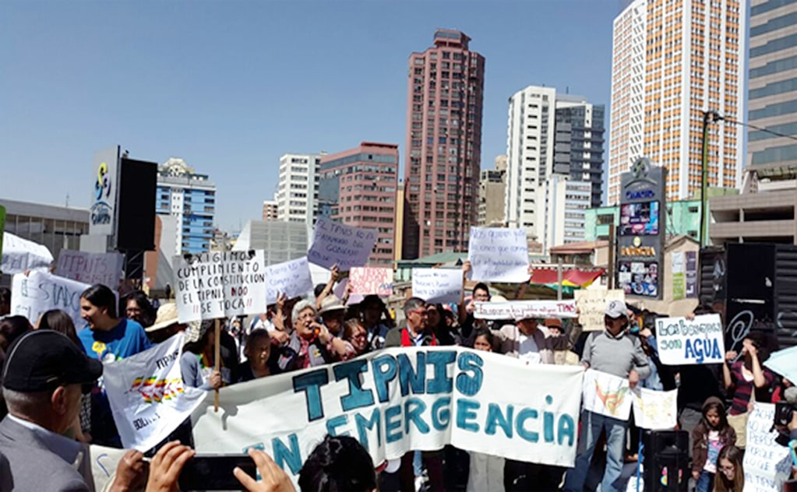
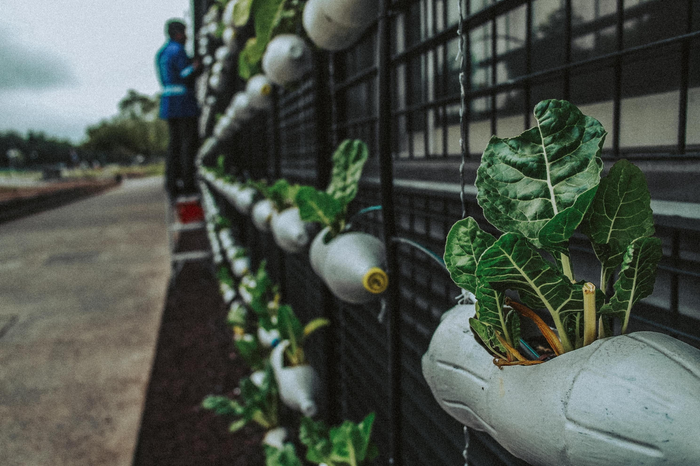
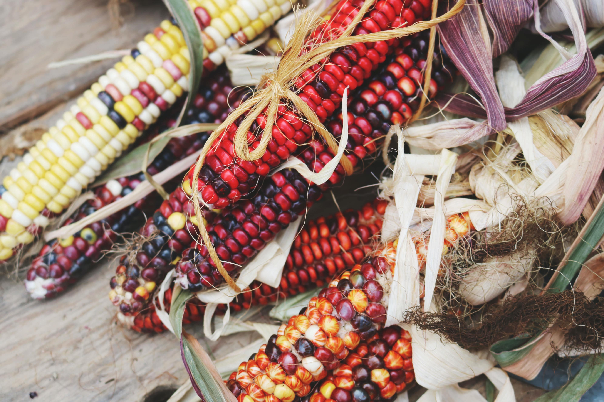
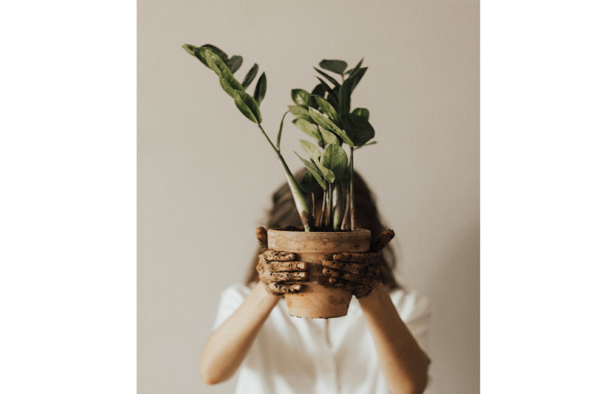

Somos una comunidad urbana diversa, con el objetivo común de impulsar un consumo responsable,
austero y crítico que implique adquirir sólo lo que necesitamos: Buscamos Justicia
Alimentaria,
Decrecimiento y EcoFeminismo.
Debemos elegir productos y servicios no solo en base a su calidad y precio, sino por su impacto
ambiental, social, y tomando en cuenta la conducta de las empresas que lo elaboran.
Estamos conscientes de
nuestro poder como consumidores y sabemos utilizarlo para el ejercicio pleno de nuestros
derechos a una vida
digna y en armonía con la naturaleza.
Queremos cambiar las relaciones sociales, culturales y económicas e incidir en las políticas públicas para
evitar la mercantilización de la vida y la consiguiente destrucción del planeta.
Defendemos el agua, el
aire, los alimentos, la tierra y las energías como bienes comunes autogestionables.
Hacemos incidencia en las políticas públicas para poner freno al agronegocio y defender
la Soberanía
Alimentaria en alianza con indígenas campesinos para la tener acceso a agua y alimentos sanos,
naturales,
ecológicos, locales, de temporada, nativos y diversos.

Principios: Nuestro colectivo promueve la cultura “R”
Reflexiona sobre tu poder como consumidor.
Rechaza lo Innecesario, el consumismo.
Reduce tu consumo a lo realmente es necesario.
Repara lo que ya tienes.
Reutiliza lo que ya existe y evita los desechables.
Recicla lo que no pudiste reutilizar.
Reincorpora a la Tierra tus residuos orgánicos.
Resiste al agronegocio y al ecocidio.

Planteamientos
1. Demandar la inclusión del CONSUMIDOR con cualidad política en
cualquier instancia pública que trate
temas
agroalimentarios.
2. Fortalecer una conciencia crítica sobre el papel de las personas
consumidoras. Un consumo consciente y
responsable es un instrumento de presión frente al mercado y una contribución al desarrollo
humano
sostenible.
3. Visibilizar las consecuencias del consumismo en todos los niveles de la
vida: modelos de producción,
reproducción de roles sociales, violencia patriarcal, ecocidio, mala alimentación, enfermedades crónicas,
etc.
4. Alianza con agricultores ecológicos y con empresas ecosociales para asegurar la
Soberanía Alimentaria y
el Derecho al Agua y a la Alimentación SANA. Juntas apostamos por generar conciencia social que posibilite
la acción para la transformación.
5. Definir estrategias conjuntas para que el mercado se vuelque en favor del bien
común y no del bien de las
multinacionales de alimentos,
6. Declaramos un boicot a la comida ultraprocesada y/o chatarra ya que
estamos conscientes
de sus riesgos y
no debemos comprarlos.
7. Pedimos al gobierno acogerse al principio de precaución para proteger
nuestra salud de
agroquímicos y
transgénicos.
8. Velar por Cumplimiento de la normativa nacional: CPE Art. 255 y 16 y 75aquella
específica que revierten
y/o prohíben los transgénicos en el país: Leyes 3525, 144, 300, 401, 453, 622, 775, RA VRNMA Nº 135/05, DS
182 – art.80 y DS 2452 y 2735.
9. Nos constituimos y declaramos en vigilancia activa del Estado
Plurinacional para exigir
que sus
operadores cumplan las leyes y las funciones que les competen.
10. Movilización articulada a nivel internacional para el “Día del
Consumidxr” (15 de
marzo), “Día de la
Madre Tierra” (22 de abril), Marcha contra Monsanto (20 de mayo).

Los criterios de la Comida Consciente
- Relación de respeto profundo con la Madre Tierra. - Rescate de sabores ancestrales y del mundo. - Cuidado de la salud y el medio ambiente. - Consumo responsable y critico. - Comercio justo. - Derecho a la alimentación. - Seguridad y Soberanía Alimentaria.
¡ Y nos declaramos en resistencia activa !
- A los transgénicos. - A la comida rápida y chatarra. - Al consumismo. - A la explotación animal. - Al Cambio Climático. - A la degradación ambiental.

¡BASTA AL GENOCIDIO AGROEMPRESARIAL!!
- Porque el sistema actual de producción de alimentos contamina, enferma y mata.
Porque se han encontrado Agrotóxicos en alimentos, sangre y orina humanas, leche materna, agua de lluvia,
cursos de ríos. En los pañales, tampones y demás productos de algodón.
- Porque millones de personas que viven cerca de los campos de cultivos son fumigadas cada
año con 400
millones de litros de venenos.
- Porque este modelo deja un ambiente estéril y devastado, con consecuencias gravísimas
para el suelo y la
biodiversidad vegetal y animal.
- Porque la agroecologia esta en peligro!!!! no se puede producir alimentos de calidad, si
las parcelas estan
cercadas por monocultivos, agrotoxicos, transgenicos, agua contaminada y plantas nucleares!!!!